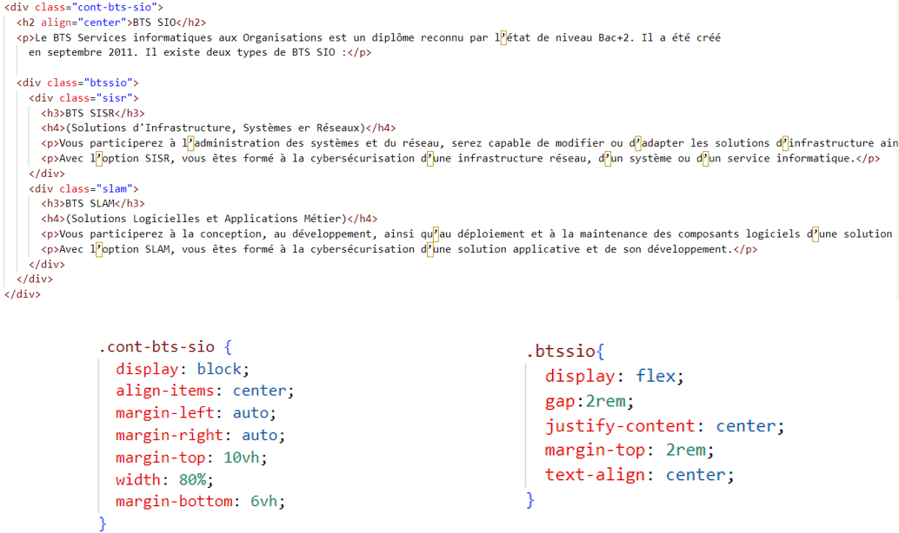

L’agence web de recrutement IYOO Talents
IYOO Talents est spécialisée dans la sélection de talents pour les entreprises à l'aide d'outils numériques innovants et de méthodes de recrutement modernes. Ils offrent des fonctionnalités uniques pour les employeurs afin qu'ils puissent trouver des candidats qualifiés de manière plus efficace et rentable.
Ce projet est mis en œuvre par une équipe passionnée, dynamique et expérimentée, formée aussi bien de collaborateurs au sein de l’entreprise nouvellement créée que des prestataires externes qui apporteront leurs compétences spécifiques essentielles à la réussite du projet.
-
Flavien TCHAKOUTE, PDG et fondateur : Titulaire d’un Master en Gestion de projets et Coopération Internationale (IRIS SUP), d’une Maîtrise en droit des affaires et certifié Scrum Master, Flavien assure non seulement la direction et le développement stratégique de IYOO DIGITAL SHOPPER mais aussi le pilotage de ce projet et la prospection active auprès des e-commerçants.
-
Aymone KOISSY, associée, développeuse Full Stack : Elle occupe le poste de directrice technique et s’assure de la bonne compréhension des enjeux auprès de notre équipe technique, leur transmettant les informations nécessaires au développement technique du projet.
-
Hassan BERRAGRAGUI, responsable technique : Ingénieur en développement web, Hassan réalise l’ensemble des fonctionnalités techniques de notre plateforme en collaboration avec l’équipe de développeurs freelance.
Avant :
Après :
